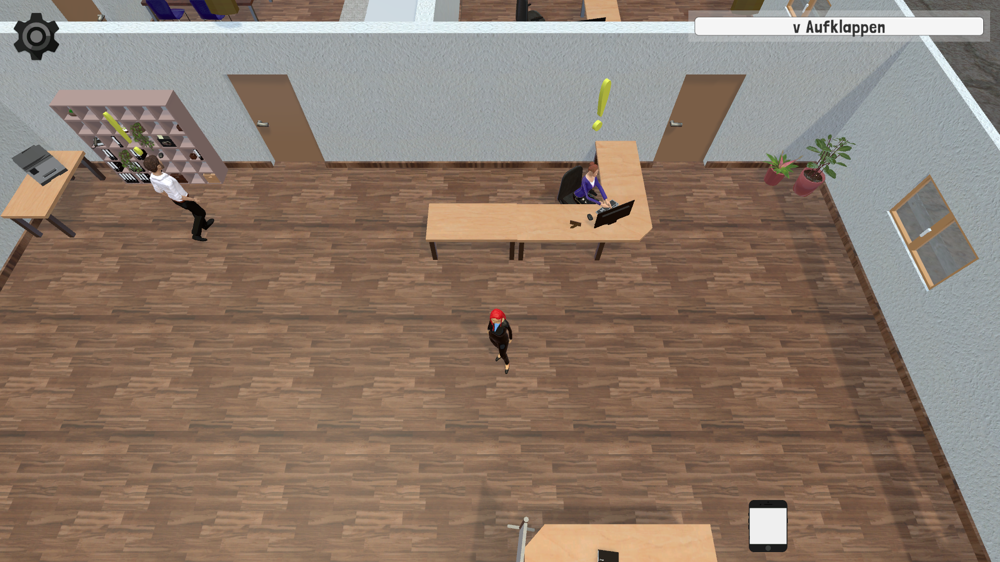
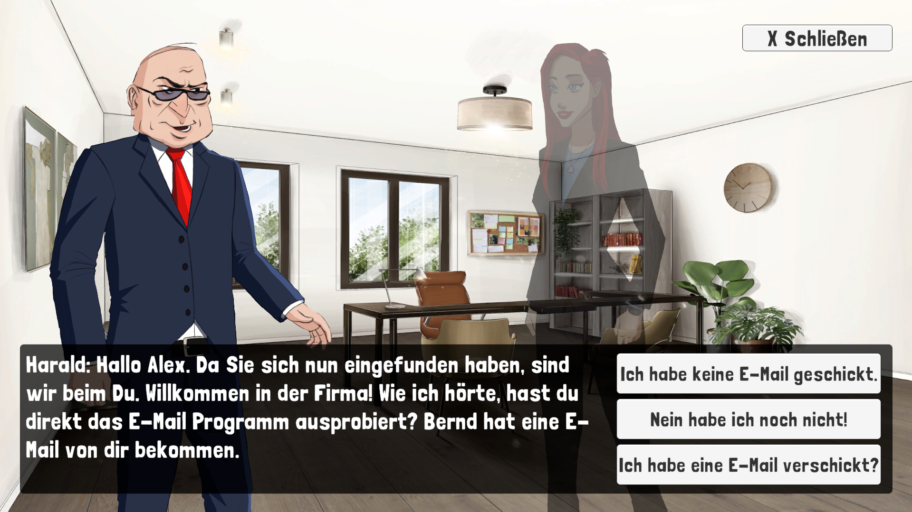
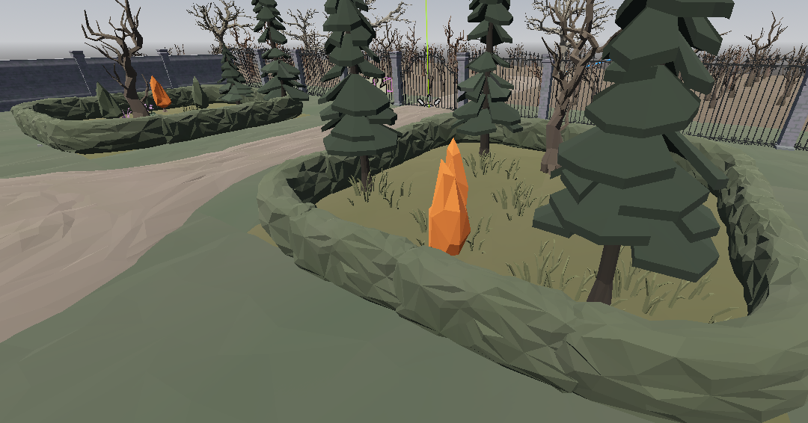

Educational 3D game developed during a 6-month internship at TU Darmstadt to replace traditional IT security trainings.


This project was developed as part of a six-month internship at TU Darmstadt.
The goal was to replace conventional IT security trainings with an interactive
3D serious game that teaches security-relevant topics in a practical and engaging way.
Players take on the role of an IT security officer navigating a virtual office
environment, responding to incidents, identifying security risks, and supporting
colleagues throughout a simulated workday.
Key Features
Interactive 3D office environment with narrative-driven quests
Quest-based structure covering common IT security scenarios
Educational focus on phishing, password security, and human error
My Contribution
Implementation of gameplay features and player interactions
NPC behavior and interaction systems
3D modeling and animation of in-game assets
Collaboration within a multidisciplinary student team
Links: Source code and full project are not publicly available due to project ownership.
Godot Editor Plugin for Semantic World Generation
Master’s thesis project: a designer-friendly Godot editor plugin for semantic, graph-based world generation.

This project was developed as part of my master’s thesis.
The goal was to create a Godot editor plugin that enables designers to generate
game worlds without requiring technical knowledge of math, linear algebra,
or engine-specific workflows.
Instead of manually placing objects or configuring complex generation parameters,
designers can describe spatial relationships using semantic annotations such as
“four chairs next to a table”. The system then generates a corresponding scene
based on a graph-defined structure.
Key Features
Custom Godot editor plugin with a dedicated dock UI
Graph-based world generation workflow
Semantic annotations for high-level spatial descriptions
Automatic scene generation from designer-friendly inputs
Decoupling of design intent from technical implementation
My Contribution
Concept, design, and full implementation of the editor plugin
Development of a custom graph editor for defining generation logic
Implementation of semantic interpretation and scene generation
Integration into the Godot editor workflow
Links:
Source code repository is private.
Full thesis PDF available on request.
Top-Down Zombie Shooter (Godot)
Systems-Driven Gameplay Prototype with Modular Quests and Progression
A top-down zombie shooter prototype developed in Godot, with a strong focus on
modular gameplay systems rather than visual fidelity.
The project explores quest-driven progression, reusable combat and AI logic,
and persistent unlocks across play sessions.
This is a personal project im currently working on and is still work in progress.
Some system may change, expand or will be replaced in the future.
Key Features
Modular, event-driven questsystem (used across multiple gameplay scenarios)
Zombie and boss AI with clear state-based ehavior
Weapon system with upgrades and modifications
Persistent progression system (unlocks, quests, high scores)
Multiple playale characters with shared systems
My Contribution
Questsystem architecture and individual quest systems
Enemy and boss AI logic
Weapon and modification system
Player controller and combat mechanics
Save and progression system
This project was developed entirely as a solo project.
Systems-Driven Gameplay Prototype with focus on third person controller and enemy attack decision logic.
Ever After is a personal Soulslike-style gameplay prototype developed to explore combat systems and enemy decision-making in a third-person action game.
The project features a custom third-person controller with lock-on targeting, dodge mechanics, and an invincibility-frame system designed for responsive and deliberate combat.
The player combat system includes a weapon-based attack chain supported by an input buffering system, allowing attacks and dodges to be queued without frame-perfect timing.
Enemy behavior is driven by a modular decision system that selects attacks based on explicit conditions such as player distance and awareness range.
The prototype consists of a single handcrafted level featuring three distinct enemy types and a boss encounter, each built on the same underlying AI system.
The focus of the project is on clean system design, debuggability, and extensibility rather than content scale or presentation.
Key Features
Custom third-person character controller with lock-on targeting
Dodge mechanic with invincibility frames (i-frames)
Weapon-based player attack chains (combo system)
Input buffering for both attacks and dodge actions
Modular enemy attack decision system based on conditions and priorities
Three enemy archetypes and one boss built on shared systems
Single-level prototype focused on gameplay and system validation
My Contribution
Third-person controller
lock-on targeting
Input buffering
modular enemy attack decision system
attack chains with input buffer
This project was developed entirely as a solo project.